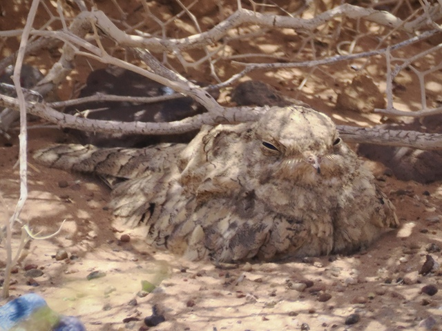
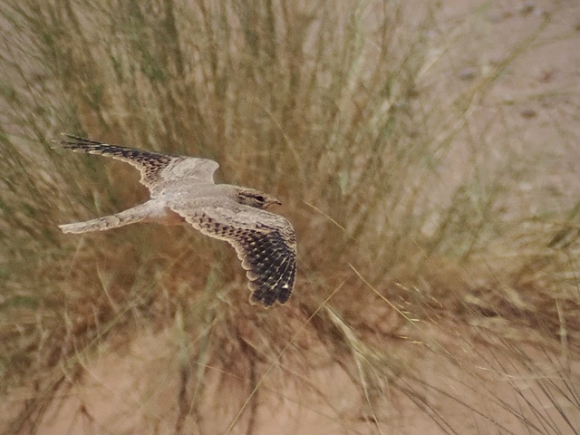
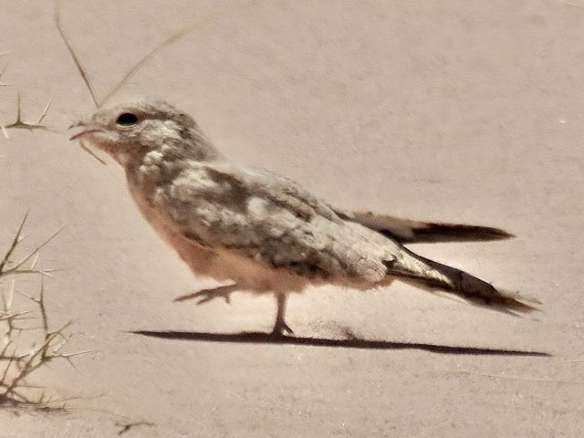

Egyptian Nightjar
Caprimulgus aegyptius
Order: Caprimulgiformes
Family: Caprimulgidae

A pale brown splatter of a bird. Found in the desert with low shrubs, where it roosts on the ground during the day.

Wings do not have white wing patches. A nocturnal bird, it hunts insects at night with its massive gape.

Walks on the sand with these tiny feeties. Words cannot express how much I love nightjars.